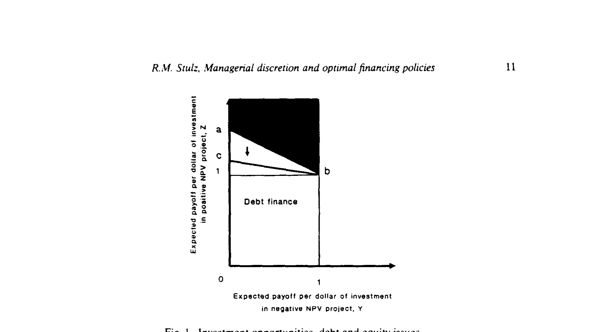
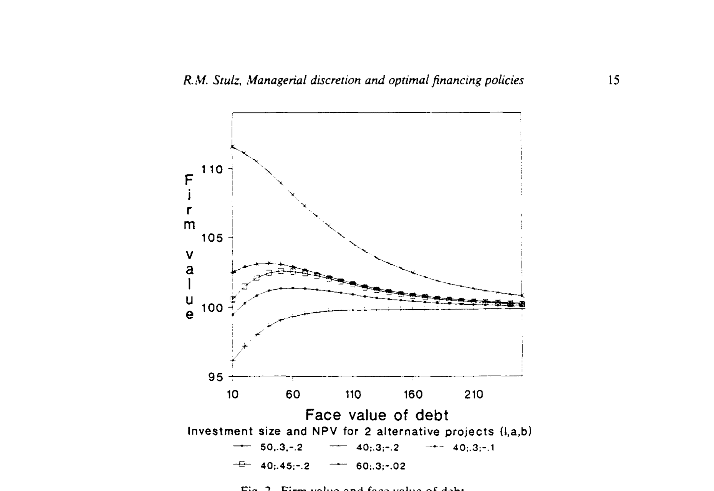
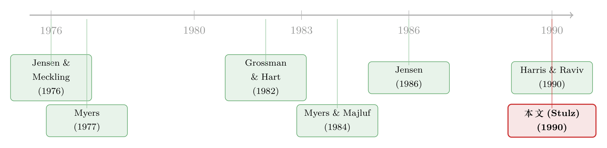

老板为什么总想多投资？——一笔债，替股东管住了他的手
本文读的是 Stulz (1990, Journal of Financial Economics)：当股东既看不见现金流、也看不见投资决策，而经理又天生偏爱「把摊子铺大」时，公司会在现金流高的年份投得太多、在现金流低的年份投得太少。债务与股权这两种融资工具，恰恰是股东用来调节「经理手里有多少钱」的旋钮——于是存在一个让公司价值最大化的最优负债水平。
1 引言：一个看不见的老板
先想象这样一家公司。
它的股东是「原子化」的（atomistic shareholders）——人数众多、每人持股极少，谁也没有动力、也没有能力联合起来对经理发号施令。更要命的是，这些股东既看不见公司当期的现金流，也看不见经理把钱投到了哪里。他们能看见的，只有一件事：公司有没有在到期日还上债。
再想象这家公司的经理。他领固定工资，在公司里没有股份。但他有一种偏好——他享受「投资」本身。投资越多，他能支配的资源越多，能给下属发的福利越多，公司越大他越有面子。用 Jensen (1986) 的话说，把正净现值 (net present value, NPV) 项目投完之后剩下的那部分现金，叫做 自由现金流（free cash flow），而它天然诱使经理去过度投资。
于是张力出现了：经理想把每一分钱都投出去，哪怕投进一个净现值为负的烂项目；而股东只希望钱投进好项目，剩下的还给自己。问题是，股东管不了他——除非有一种办法，能在「钱进经理口袋之前」就把它的数量定下来。
这篇论文要讲的，就是这个「办法」。而它的名字，叫融资政策。
2 一枚硬币的两面：过度投资与投资不足
这里有一个特别容易被忽略、却是全文枢纽的洞察：信息不对称同时制造了两种相反的扭曲。
我们已经说了第一种——现金流高的时候，经理把多出来的钱投进烂项目，这是 过度投资成本（overinvestment cost）。
可同一套信息结构，反过来还会带来第二种扭曲。设想现金流真的很低，低到连那个好项目都喂不饱。这时经理跑去跟股东说：「钱不够，让我再融点资吧。」股东信不信？
不信。因为经理永远会这么说——无论现金流高低，他都想要更多钱去投资。「狼来了」喊多了，真的狼来时也没人信。于是当现金流确实低、好项目确实没投满时，股东依然拒绝放钱，公司被迫投资不足。这就是 投资不足成本（underinvestment cost）。
注意这两种成本的根源是同一个：经理无法可信地把「现金流低」这个消息传递给股东。正因为他总有过度投资的动机，他「哭穷」的话才一文不值。这是全文最漂亮的一处逻辑。
接着，一个自然的问题是：既然两种成本并存，融资政策能不能把它们一起消灭？
不能。这正是论文的反转所在——融资政策只能压住其中一种，代价是放大另一种。
- 如果让经理在 date 1 多融资（正的净融资），他就更可能投满好项目（投资不足↓），但也更可能把余钱投进烂项目（过度投资↑）。
- 如果逼经理还钱（负的净融资，通过发债实现），过度投资↓，但投资不足↑。
到底该往哪个方向拨，取决于这家公司两种成本谁更大。而这又取决于两样东西：现金流的概率分布，和投资机会的好坏。这就是全文的核心命题。
3 模型：把直觉写成方程
3.1 设定
论文用了一个干净的三期模型：date 0、1、2。
- 资产在 date 1 产生一笔随机的非负清算现金流
R，其累积分布为 \(G(R)\)，密度 \(g(R)>0\)（对一切 \(0- date 1 的投资额为
I。R和I外部投资者都看不见。- 投资的边际回报是一个阶梯函数：前
I*单位，每单位 date 2 期望回报为Z；超过I*的部分，每单位回报为Y。利率设为零，故 \(Z>1\)（好项目）、\(Y<1\)（坏项目）。N是 date 1 的净融资：\(N>0\) 表示对外融资以投资超过自有现金流，\(N<0\) 表示还债或分红。- date 1 违约 → 公司清算，投资机会全部丧失（这是发债的「死扛成本」）。
- date 1 的投资额为
经理的行为很简单：只要不被强制还钱，他就把手上所有的钱全投出去，且能融多少融多少。
3.2 没有资本市场时的公司价值
如果公司根本不能进资本市场（既不能多融、也不能被逼还钱），它的价值就是论文的方程 (1)：
$$V = I^*(Z-1) + E(R) - \int_{I^*}^{\infty}(R-I^*)(1-Y)\,g(R)\,dR - \int_{0}^{I^*}(I^*-R)(Z-1)\,g(R)\,dR$$
让我们一项项读它——这是理解全文的钥匙：
- \(I^*(Z-1)\)：如果经理替股东着想，他会把好项目投满
I*，净现值就是这一块。 - \(E(R)\)：现金流的期望（利率为零，所以就是它本身）。
- 第三项 \(\int_{I^*}^{\infty}(R-I^*)(1-Y)g(R)\,dR\)：过度投资成本。当 \(R>I^*\)（现金流超过好项目容量），多出来的 \(R-I^*\) 被投进坏项目，每元损失 \(1-Y\)。
- 第四项 \(\int_{0}^{I^*}(I^*-R)(Z-1)g(R)\,dR\)：投资不足成本。当 \(R
前两项是「理想世界」的价值，后两项是「经理说了算」拿走的那部分。整篇论文，本质上就是在问：怎么用融资政策，把后两项的总和压到最小？
3.3 多融资：一块钱该不该交给经理？
先看「正的净融资」——即股东允许经理多融资 N（通过发不影响其决策、但有违约成本的 date 2 到期股权来实现）。此时老股东的股权价值是方程 (2)：
$$V(N) = \int_{I^*-N}^{\infty}\big[(R+N-I^*)Y + I^*Z\big]g(R)\,dR + \int_{0}^{I^*-N}(R+N)Z\,g(R)\,dR - N$$
怎么来的？经理手上的总资金是 \(R+N\)。
- 若 \(R+N>I^*\)（即 \(R>I^*-N\)）：好项目投满拿 \(I^*Z\)，余下的 \(R+N-I^*\) 投进坏项目拿 \((R+N-I^*)Y\)——这是第一个积分。
- 若 \(R+N
- 最后减去
N：风险中性的新投资者按公平价买入，date 2 拿回N，所以对老股东就是净支出N。 - 最后减去
真正关键的一步在于：对 N 求导，在 \(N=0\) 处看看「多给经理一块钱」到底划不划算。 这就是方程 (3)：
$$V_N(0) = Y[1-G(I^*)] + ZG(I^*) - 1 > 0$$
这个不等式漂亮得让人想鼓掌。它的直觉是：多给经理的那一块钱，
换句话说：多给经理的一块钱，期望回报是 \(Y[1-G(I^*)]+ZG(I^*)\)。只要这个期望回报超过一块钱，股东就该把资源做大；反之，就该想办法把钱从经理手里抠出来。
这里有个反直觉的推论值得停下来想一想：「公司有没有自由现金流问题」并不取决于它出现自由现金流的概率 \(1-G(I^*)\) 这一个数。 因为同样的 \(G(I^*)\)，配上一个足够好的好项目（Z 很大），结论可能完全相反。概率必须和投资机会的边际回报一起看，才能定夺。
由此得到论文的 Result 1：当 (3) 式成立时，经理被允许融的资本是唯一的，且 (i) 随投资机会的边际回报和好项目容量 I* 上升而上升；(ii) 随「出现自由现金流的概率」下降而上升。
论文进一步指出，对某些分布（如对数正态），自由现金流概率随期望现金流递增，于是存在一个临界值 K：期望现金流低于 K 的公司发股、高于 K 的不发；而且发股的公司里，期望现金流越低，发得越多。
下面这张图，把「该发股还是该发债」的全部判断压缩到了 Z–Y 平面上：

Figure 1: Investment opportunities, debt and equity issues
如图 1 所示，平面右上方（好项目越好、坏项目越不坏）是发股区：投资机会足够好，股东愿意把更多钱交给经理。左下方则是发债区。中间那条 (a, b) 线，是「多给一块钱的边际成本（过度投资↑）恰好等于边际收益（投资不足↓）」的分界。论文还指出，自由现金流概率下降会把这条线整体下移到 (c, b)——投资机会改善，融资门槛随之放宽。
3.4 逼经理还钱：债务登场
现在看另一半。如果 (3) 式反号成立——即「无成本地从经理手里收回一块钱反而能提升公司价值」——那么最优净融资是负的。可问题来了：经理嘴上承诺「我到 date 1 会还钱/分红」，可信吗？
不可信。因为还钱与他「最大化投资」的本性相悖。
但真正关键的一步在于：经理可以通过在 date 0 发行一笔 date 1 到期的债，把这个承诺变得可信。 因为一旦 date 1 还不上，公司就破产、清算、经理丢掉所有福利。破产的威胁，替股东把经理的手按住了。当然，这个承诺有死扛成本——破产意味着投资机会的丧失。
于是公司价值成了「面值」的函数：面值太低，管不住过度投资；面值太高，破产概率上升、投资机会损失。两者权衡之下，存在一个让公司价值最大化的最优负债面值。

Figure 2: Firm value and face value of debt
如图 2 所示，公司价值随债务面值先升后降，顶点处即最优资本结构。这一条曲线，正是全文标题「最优融资政策」四个字的全部含义——它不来自税盾、不来自破产律师费，而纯粹来自对经理可支配资源的调节。
别忘了一个微妙之处：最优负债可以是负的。当股东反而希望给经理更多资源（去降低「好项目没投满」的概率）时，公司应该持有「财务松弛」（slack）——这正呼应了 Myers and Majluf (1984)：松弛是有益的，哪怕它日后可能变成自由现金流。
4 现金流波动率：一条意外的暗线
论文第 6 节抖出了一个漂亮的比较静态结论：现金流波动率越大，过度投资与投资不足同时变得更可能，公司价值对任何负债水平都更低。
直觉是：融资政策是 date 0 一次性定下的（股东在 date 1 拿不到新信息），它只能「平均地」对付现金流。现金流越分散，无论你把负债定在哪，都会有大量状态落到「严重过度投资」或「严重投资不足」的尾部。
这就引出一个有意思的推论：跨项目分散化，能降低管理层自由裁量权的代理成本——因为它让现金流更可预测，从而让一刀切的融资政策更管用。（顺带一提，这与后来「多元化折价」文献的张力恰好相反，值得玩味。）
5 文献脉络
把这篇论文放回它的坐标系，会更明白它的分量。
一切的起点是 Jensen and Meckling (1976)——他们第一次把「经理与股东的利益冲突」正式写成代理成本，奠定了整个现代公司金融的语言（关于这条主线，可参见《债务这副药，为什么不能全吃？——重读 Jensen 和 Meckling 五十年》）。
接着，Myers (1977) 指出了投资不足的经典版本：高杠杆下，新投资的收益大半流向债主，股东于是放弃好项目——这是「债务积压」（debt overhang）。然后，Myers and Majluf (1984) 从信息不对称出发，论证了财务松弛的价值。

而真正与本文针锋相对的另一极，是 Jensen (1986) 的自由现金流假说：钱太多反而坏事，债务的好处恰恰是逼经理把钱吐出来（这一脉的实证，可参见《现金为什么一定要「还」出去？——四十年后，重读 Jensen 的自由现金流》）。同期 Harris and Raviv (1990) 则强调债务的「信息角色」。
Stulz 这篇论文的位置，就在 Myers 的「投资不足」与 Jensen 的「过度投资」之间——它没有选边站，而是用一个模型把两者同时装了进去，并指出融资政策是在二者之间做权衡。这种「统一」的野心，正是它被反复引用的原因。日后用管理层自由裁量权去解释真实杠杆率的研究（如《老板不想借钱，债却替他保住了位子》），几乎都能追溯到这里。
6 评论与延伸（Q&A + 研究方向）
(a) 几个可能的疑问
Q：这篇文章和 Jensen (1986) 的自由现金流，到底有什么不同？
Jensen 只讲了硬币的一面——钱太多→过度投资→用债务约束。Stulz 的贡献是把另一面（现金流低时的投资不足）一并内生出来，并证明二者源于同一个不可信沟通问题。于是债务不再是「越多越好」，而是有一个内点最优。
Q：为什么经理「哭穷」一定不可信？换个合约不行吗？
因为经理永远从增加投资中获益，所以无论真实现金流如何，他的最优策略都是宣称「钱不够」。这是一个分离不可能的信号问题。论文明确假设契约解（如绩效薪酬）在这类公司里价值有限，并援引 Jensen and Murphy (1990) 的证据：高管薪酬与业绩的关联其实很弱。
Q：为什么是「债」而不是「分红承诺」来约束经理？
因为分红承诺本身不可信（违背经理本性），除非它绑定「不分红就下岗」，而这又需要股东集体行动。债务的高明之处在于：还不上就自动破产清算，无需股东事后采取任何行动，承诺天然可信。债的角色，是把「软承诺」变成「硬约束」。
Q：最优负债可以为负，这是什么意思？
当公司投资机会很好、但容易「钱不够」时，股东反而希望给经理更多弹药去降低投资不足。此时「负债务」=持有现金/松弛。这与 Myers-Majluf 的松弛价值一脉相承，也解释了为什么好成长股往往低杠杆、高现金。
Q：现金流波动率的结论，和「多元化折价」不是矛盾吗？
是一处有趣的张力。本文说分散化降低代理成本（现金流更可预测→一刀切融资更管用）；而多元化折价文献说集团内部资本市场会滋生交叉补贴。两者的差别在于约束机制：本文里融资政策是外部硬约束，折价文献里内部资本配置是软的。谁主导，是实证问题。
Q：这个模型能被拿去做实证吗？
难点在于核心变量——真实现金流分布、
I*、Z、Y——都不可观测。但它给出了可检验的比较静态：投资机会越好→杠杆越低；现金流波动越大→公司价值对杠杆越不敏感。后续大量「杠杆决定因素」的实证，都在间接检验它。
(b) 几个可能的研究问题与提案
1. 把模型搬到公司债定价里。 【经济故事】本文的债务有「死扛成本」（破产=丧失投资机会），这意味着债的违约边界内生于代理冲突，而非纯粹的资产价值。一个有过度投资倾向的经理，会系统性抬高违约概率，从而改变信用利差。 【可行性】中。需要把 Stulz 的离散模型嵌入一个结构化信用模型；识别上可用「治理质量」代理过度投资倾向，检验其对信用利差的影响。数据（公司债利差 + 治理指标）现成。
2. 外资持有人会放大还是缩小这种代理成本？ 【经济故事】本文的关键摩擦是「股东原子化、无法集体行动」。若引入一类积极的外资机构投资者，他们能降低 date 1 集体行动成本，从而部分替代债务的约束作用——这会改变最优杠杆。 【可行性】中高。可借「外资可投资度」放开作为准自然实验，检验外资持股上升后公司杠杆与现金持有的变化。数据可得，识别策略清晰（参见外资持有人相关文献）。
3. 现金流波动率 → 杠杆敏感度的直接检验。 【经济故事】本文预测：现金流越波动，公司价值对杠杆越不敏感，因而最优杠杆的「精确度」下降。这意味着高波动行业应表现出更分散、更随意的杠杆选择。 【可行性】高。用 Compustat 现金流波动率 + 行业固定效应，检验杠杆对投资机会的反应斜率是否随波动率衰减。完全 doable。
4. 流动性视角下的「死扛成本」。 【经济故事】本文假设违约即清算、投资机会尽失。但若资产二级市场流动性高，清算损失就小，债务的约束就更「便宜」。于是资产流动性应与最优杠杆正相关——这与本文逻辑互补。 【可行性】中。需构造资产流动性度量（如行业资产换手率），检验其与杠杆的交互。相关文献已有基础。
7 参考文献
- Grossman, S. and O. Hart (1982). Corporate financial structure and managerial incentives. In: J. McCall, ed., The Economics of Information and Uncertainty (University of Chicago Press, Chicago).
- Harris, M. and A. Raviv (1990). Capital structure and the informational role of debt. Journal of Finance 45(2), 321–350.
- Jensen, M. C. (1986). Agency costs of free cash flow, corporate finance and takeovers. American Economic Review 76(2), 323–329.
- Jensen, M. C. and W. H. Meckling (1976). Theory of the firm: Managerial behavior, agency costs and ownership structure. Journal of Financial Economics 3(4), 305–360.
- Jensen, M. C. and K. J. Murphy (1990). Performance pay and top management incentives. Journal of Political Economy 98(2), 225–264.
- Myers, S. C. (1977). Determinants of corporate borrowing. Journal of Financial Economics 5(2), 147–175.
- Myers, S. C. and N. S. Majluf (1984). Corporate financing and investment decisions when firms have information that investors do not have. Journal of Financial Economics 13(2), 187–221.
- Stulz, R. M. (1988). Managerial control of voting rights: Financing policies and the market for corporate control. Journal of Financial Economics 20, 25–54.
- Stulz, R. M. (1990). Managerial discretion and optimal financing policies. Journal of Financial Economics 26(1), 3–27.